| SOURCE | TITLE| IMAGE MATCH | click to source page |
| www.ebay.com | TUXEDO BLACK & WHITE CAT CHEWING STRAP Watercolor Art Print ... | 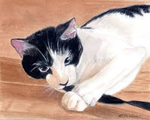 |
| www.etsy.com | Tuxedo Cat Portrait Head Portrait Watercolor Art Print ... | 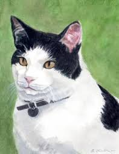 |
| www.instagram.com | Oil on panel. My first animal painting. I think it needs ... | 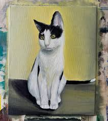 |
| www.facebook.com | Congratulations E. C. Kanko for “Hopper” earning Overall ... | 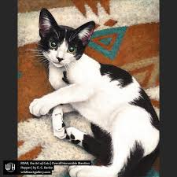 |
| www.reddit.com | Fun fact, here in Brazil we call the Tuxedos Sylvester ... | 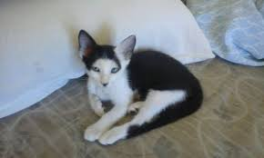 |
| americanwatercolor.net | An Artist Knows - American Watercolor | 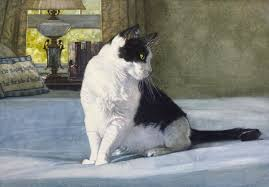 |
| taphath-foose.pixels.com | Meco by Taphath Foose | 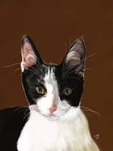 |
| www.reddit.com | Cat portrait, Me, watercolour, 2021 : r/Art | 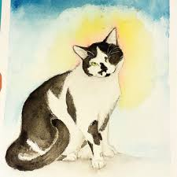 |
| www.instagram.com | Delicate and detailed, the cat paintings of Elizabeth ... | 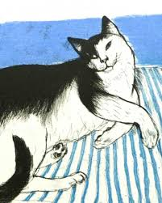 |
| www.ebay.com | Original art painting 'Cat on cloud' | eBay | 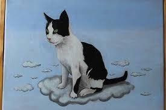 |
| www.facebook.com | Cat Art Crazy | 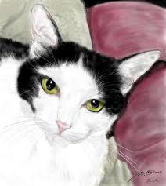 |
| www.menalevitartist.com | Paintings - Animal and Wildlife | Mena Levit Pastel Artist | 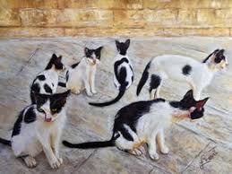 |
| www.cat-portraits.com | Cute Black and White Cats | 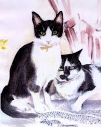 |
| outsidein.org.uk | Black and white cat – Outside In | 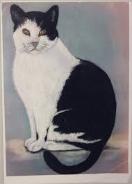 |
| www.naomijenkinart.com | Cat Portrait Gallery | Portraits packed with character | 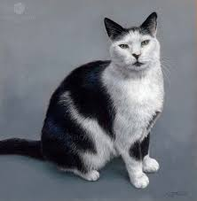 |
| catsbylinda.com | Django Sitting - CATS BY LINDA | 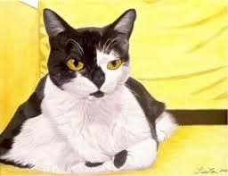 |
| en.wikipedia.org | Squitten - Wikipedia | 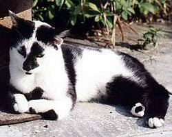 |
| displate.com | Calico Cat Painting with Signature' Poster, picture, metal ... | 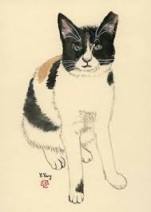 |
| melissasmithart.com | The Healing Power of Pet Portraits: How a Painting Can Help ... | 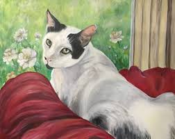 |
| fineartamerica.com | Lady Tuxedo Cat Painting Painting by Dora Hathazi Mendes ... | 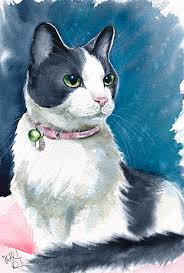 |
| gabriellashawceramics.com | Black & White Cat 1/4 Pint Straight Sided Jug - Gabriella ... | 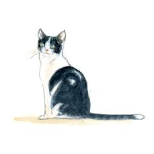 |
| taphath-foose.pixels.com | Meco Acrylic Print by Taphath Foose - Taphath Foose Official ... | 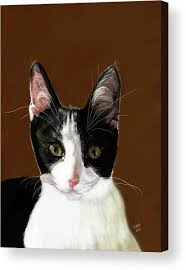 |
| www.saatchiart.com | The Black And White Cat Drawing by Ivonna Zile | Saatchi Art | 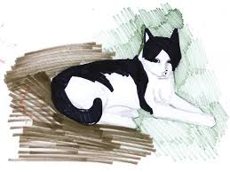 |
| www.sarahtheartist.com | Painted Animal Portraits — Sarah The Artist | 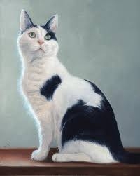 |
| www.cottoneauctions.com | 19th Century Folk Art Painting of Cat in Rocker | Cottone ... | 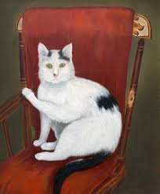 |
| www.sheiladelgado.com | Cat Sayings – 2012 | Sheila's Corner Studio | 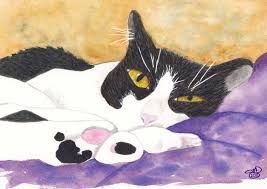 |
| www.catmandrew.com | Cat Paintings Drawings For Sale Watercolor Portrait For Sale FL | 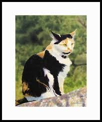 |
| www.tiktok.com | Draw Realistic Art Animal Jam | TikTok | 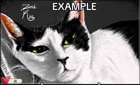 |
| www.mapquest.com | Katina's Animal Rescue , 890 Fire Tower Rd, Jackson, NC ... | 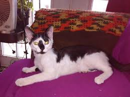 |
| beansidhesbrits.com | Erin Theilacker: Pet Portraits | 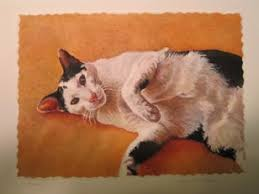 |
| www.pennyrichardson.co.uk | Cat Portraits from Photos | Cat Artist | Cat Paintings | 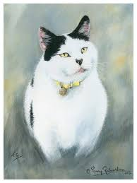 |
| kr.pinterest.com | Black and White Cat Art Print | 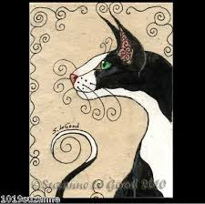 |
| www.artsamplifiedwv.com | Kelly Bryant: Art Steeped with WV Folklore | 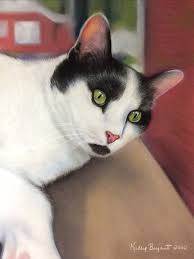 |
| greatrescuescalendar.com | about the portraits Archives - Great Rescues Day Book Great ... | 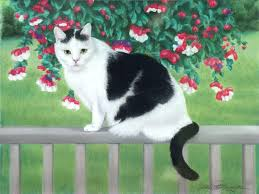 |
| lostandloved.co.uk | 70s edition 'The Illustrated Cat' – Lost and loved | 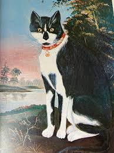 |
| www.katesartclasses.com | Buster - pastel of a black & white cat — Art Classes in ... | 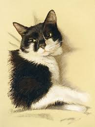 |
| www.suzannedavisstudio.com | Commissions Suzanne Davis Studio Illustration and Pet ... | 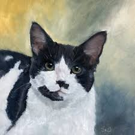 |
| www.pet-portraitartist.com | Elegant Cat Oil Portraits by Nicholas Beall | Feline Art ... | 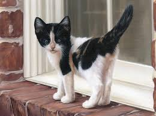 |
| www.instagram.com | An artist trade with @emalyhuntart 🤍 two 8x10s for two ... | 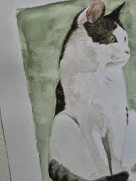 |
| luwixon.com | LuWixon.com | 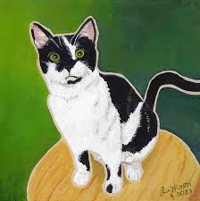 |
| warriors.fandom.com | Black Ear | Warriors Wiki | Fandom | 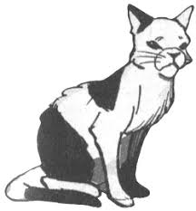 |
| www.warblercreative.work | Pets & Homes — Warbler Creative | 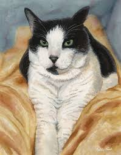 |
| www.sarahflorer.com | Cats | Sarah Florer Watercolor — Watercolor Art and Art Prints | 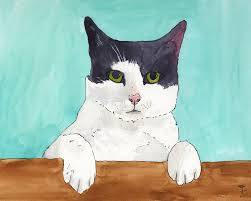 |
| www.etsy.com | Handpainted Watercolor Custom Cat Dog Pet Portrait Plain ... | 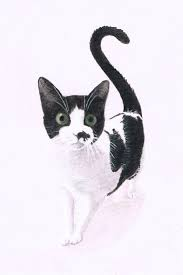 |
| www.vecteezy.com | Page 3 | Cowboy Cat Stock Photos, Images and Backgrounds for ... | 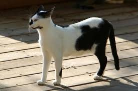 |
| kaylariceart.com | Kayla Rice - Naka Beach | 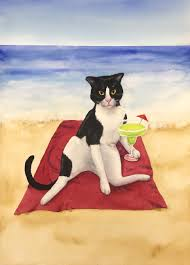 |
| www.jonroarkart.com | Pet Portraits — Jon Roark Art | 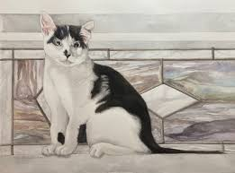 |
| permacultureeducationinstitute.org | Commission an original artwork from a refugee youth ... | 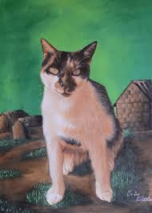 |
| abitamysteryhouse.com | John Preble, Louisiana Artist | 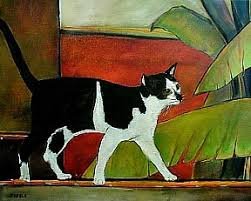 |
| www.catmandrew.com | Cat Paintings Drawings For Sale Watercolor Portrait For Sale FL | 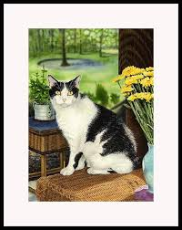 |
| fineartamerica.com | Lucky Elvis - Cat Portrait Metal Print by Dora Hathazi ... | |
| artscouncilvalley.betterworld.org | 21. Jacquie Marie Vaux, Black and White Cat | World Art ... | |
| www.gaudierart.com | Pets — Benita Gaudier Fine Art | |
| www.popmatters.com | More Than Just a Pretty Picture: 'Cats in Art' » PopMatters | |
| www.yessy.com | Yessy > Paintings & Prints > Animals, Birds, & Fish > Cats ... | |
| www.reddit.com | Painting for my wife : r/painting | |
| messybeast.com | THE ILLUSTRATED BOOK OF CATS - BREED DESCRIPTIONS, BREEDING ... | |
| www.facebook.com | I love making small catpaintings in oil. These are currently ... | |
| graemejwsmith.com | Daisy May | Graeme J W Smith | |
| paintingsbyaline.com | August | 2017 | Paintings by Aline |